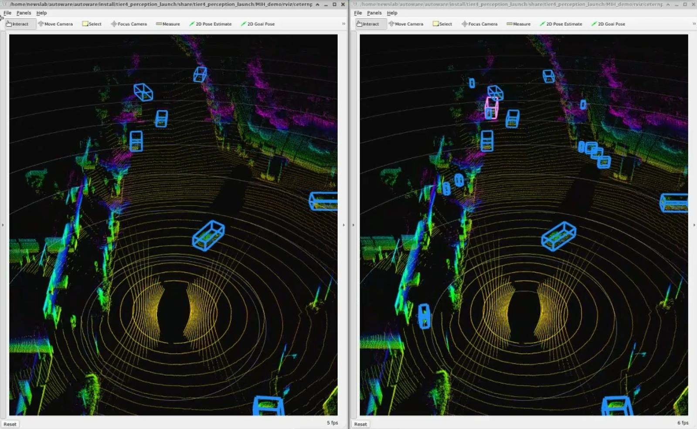
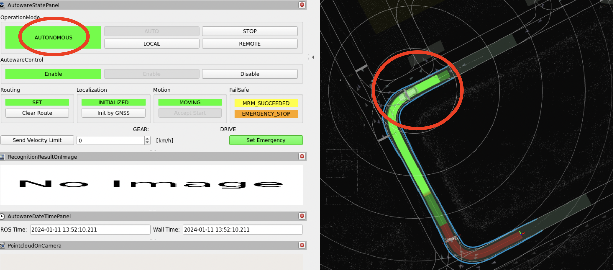
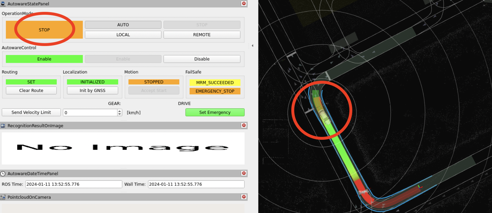

Perception
Example: lidar_centerpoint
TODO(allan&簡, 仴筑): the usage of model files. The CUDA env setup. Testing procedure.
Newslab note: Launch lidar-centerpoint demo document
GitHub : centerpoint_vs_centerpoint-tiny

centerpoint\_vs\_centerpoint visualizer
- Download and compile model files
- Create a folder named
~/autoware_data/lidar_centerpoint, where contains four model files. - When first running lidar_centerpoint package, it will automatically compile and produce engine file. The engine file is related to CUDA version. As a result, if you want to run lidar_centerpoint on a different computer where CUDA version is different from the previous one, you need to delete the engine file and recompile.
- Create a folder named
- Testing procedure
$HOME/2023-08-09_rsu-to-car-lidar-fusion-rosbag/rosbag2_2023_08_09-13_33_22can be change to other rosbag record for testing.- The output detection will be sent to
/objectstopic, you may useros2 topic echocommand to check whether the package works.
source ~/autoware/install/setup.bash
ros2 bag play -l \
$HOME/2023-08-09_rsu-to-car-lidar-fusion-rosbag/rosbag2_2023_08_09-13_33_22 \
--remap /velodyne_points:=/sensing/lidar/pointcloud
ros2 run tf2_ros static_transform_publisher 0 0 0 0 0 0 base_link velodyne
ros2 launch lidar_centerpoint lidar_centerpoint.launch.xml
Example: QBOX Driver
TODO:(許)
The QBOX driver is a ROS node designed for reading Ethernet messages
from QBOX. It publishes these messages into various ROS topics and can
automatically stop the Autoware ego vehicle by invoking the
/api/operation_mode/change_to_stop service in Autoware if it detects
a high collision risk, as indicated by a low time-to-collision (TTC)
value.
-
Clone the Repo, ensure the project is built following the tutorial.
-
Run the QBOX node using the following command.
source ~/autoware/install/setup.bash
source install/setup.bash
ros2 run qbox qbox
To specify custom values for ip, port, or ttc, use the
following format:
source ~/autoware/install/setup.bash
source install/setup.bash
ros2 run qbox qbox --ros-args -p ip:=<your_ip> -p port:=<your_port> -p ttc:=<your_ttc>
For example:
ros2 run qbox qbox --ros-args -p ip:=10.0.0.2 -p port:=9998 -p ttc:=5
-
Testing if ego vehicle stop when it detects a high collision risk.
- Follow the tutorial in Planning simulation to launch the simulator.
- Start the ego vehicle in AUTONOMOUS mode.
- Observe if the ego vehicle stop due to low TTC values or check if
OperationMode in AutowareStatePanel change from AUTONOMOUS to
STOP.
- AUTONOMOUS

-
STOP

-
Check if ROS topic publish correctly
Run the node and test the following data topics in separate shells:
-
FCW Data: Observe
messageandTTC.valuefor collision risk assessment.ros2 topic echo /perception/fcw_TTC -
LDW Data: Monitor
messageandLD_happened_code.valuefor lane departure alerts.ros2 topic echo /perception/ldw_lane_departure